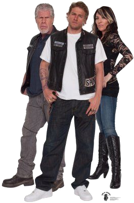

Sons of Anarchy
Sons of Anarchy eru þættir um mótorhjólaklúbb sem gerir hluti utan laganna. Þeir fjalla um undirheimana sem eru tengdir við útlaga mótorhjólaklúbba og notaði Kurt Sutter (sá sem skapaði þættina) Hells Angels og sögurnar í kringum þá sem undirstöðu við þættina. Sumir sem koma fyrir í þáttunum eru fyrrum meðlimir úr Hells Angels sem voru fengnir inn sem sérfræðingar til að gera þættina sem raunverulegasta. Þættirnir fylgja aðalpersónunni Jackson "Jax" Teller og hvernig hans líf í klúbbnum breytist eftir að hann eignast barn og finnur skrif föður síns sem stofnaði og leiddi klúbbinn áður fyrr.

Sons of Anarchy Motorcycle Club Redwood Original
Sons of Anarchy Motorcycle Club Redwood Original, eða SAMCRO stytt, er útlaga mótorhjólaklúbbur stofnaður 1967 af John Teller og öðrum meðlimum (Piermont "Piney" Winston, Lenny "The Pimp" Janowitz, Keith McGee, Wally Grazer, Thomas "Uncle Tom" Whitney, Chico Villanueva, Otto "Lil' Killer" Moran og Clarence "Clay" Morrow). John var hermaður í Víetnam stríðinu og myndaði tengsl þar með Piney og Lenny. Saman stofnuðu þeir SAMCRO og hinir sem komu á eftir eru taldir vera fyrstu níu (First Nine) meðlimirnir. Logoið sem má sjá hér til hliðar er Maðurinn með Ljáinn (Grim Reaper) en búið að skipta út ljánum fyrir M-16 hríðskotabyssu til minningar um tíma þeirra í Víetnam. Klúbburinn byrjaði sem vinir sem vildu lifa utan þjóðfélagsins, sjá um sig sjálfir án þess að þurfa að heyra undir stjórn, en fljótlega breyttist hann yfir í að gera ólöglega hluti. Helsta tekjulind klúbbsins var að selja byssur til aðra glæpamanna ásamt öðru.
Jackson "Jax" Teller

Jackson, eða Jax eins og hann er kallaður í þáttunum er varaforseti klúbbsins þegar þættirnir byrja. Hann er sonur John Teller og Gemma Teller-Morrow. Í kringum þrítugt, með fyrsta barn á leiðinni, fer Jax að hugsa um hvort að þetta líf sé það sem hann vill fyrir sig og barnið sitt. Rólegur og yfirvegaður einstaklingur, þá á hann til að missa stjórn á skapinu þegar fjölskylda hans er í vanda eða hættu stödd. Þegar hann fæddist, var faðir hans forseti klúbbsins og fæðist hann inní þetta líf og þekkir þar af leiðandi ekkert annað en þetta grimma líf, en það stöðvar hann ekki við að gera sitt besta fyrir aðra í kringum sig.
Hamlet on Harleys
Kurt Sutter sagðist hafa fengið innblástur úr Hamlet eftir Shakespear og er það greinilegt við fyrstu sýn ásamt seinna meir í þáttunum. Clarence "Clay" Morrow var besti vinur John Teller og giftist hann konu Johns, Gemma Teller, eftir að hann lætur lífið og verður stjúpfaðir Jax. Mikið er gefið til kynna að Clay (og Gemma) hafi drepið John til að losa við hann svo að þau gætu opinberað sitt samband en til að hægt sé að staðfesta það myndi spilla fyrir fólki þáttunum. Ávallt betra að fólk finni út úr því sjálft.